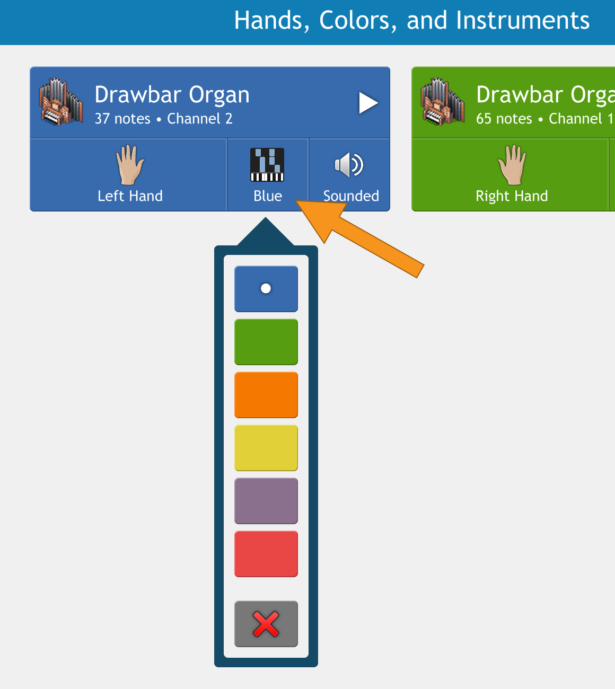
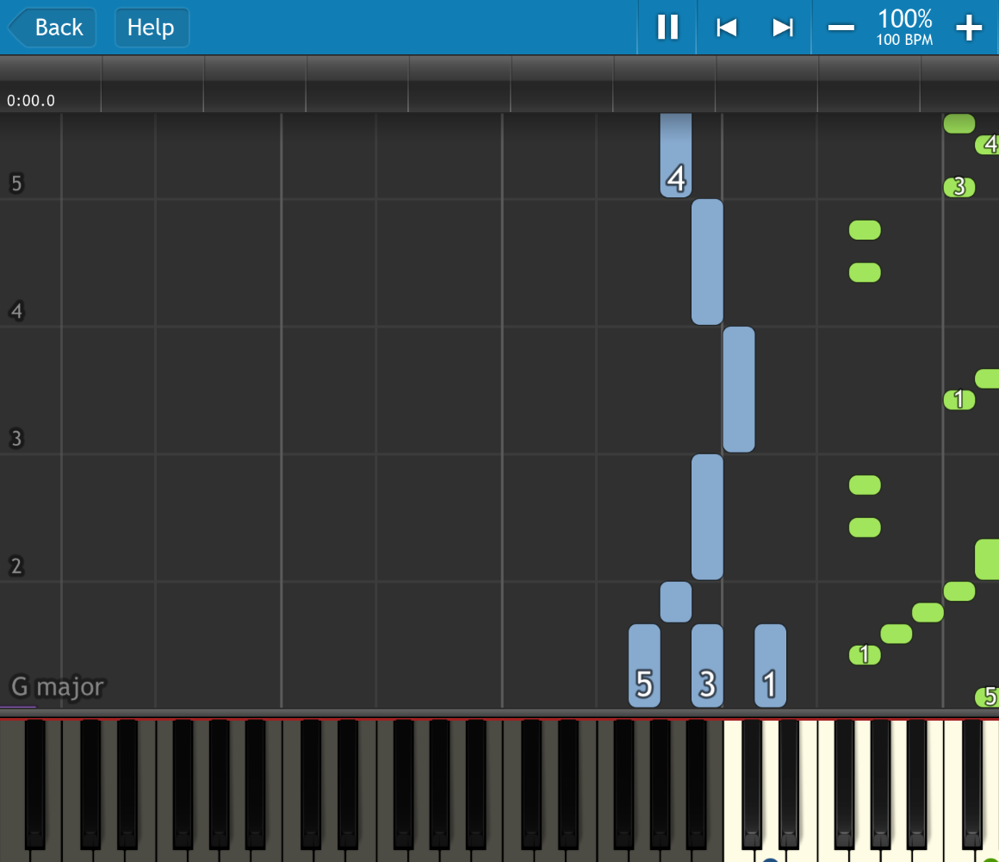

每周一首新曲：Synthesia 串起我的钢琴练习工作流
以前练一首歌要在三个软件之间来回切换，现在把 Synthesia 当中央环节，从找 MIDI 到归档进度一条龙。本文拆解这条我跑了三个月的实际流程。
旧流程的痛点：三个窗口来回跳
我每周要啃一首新歌的钢琴版。这个听起来简单的任务，在 Synthesia 之前我是这么干的：
先在网上扒 MIDI 文件——通常是某个论坛、GitHub 仓库或者专门的谱面站。拿到以后用 GarageBand 打开，手动把左右手声部分开，调整每个声部的音量和音轨分配，导出成一份"干净的" MIDI。然后打开 Logic 或者 Audacity，自己跟着弹一遍录下来，回听哪里错了，再回去改 GarageBand 里的声部设置。最后在 Excel 里记一下这周练了什么、速度有没有提升。
这一套下来，至少三个软件轮流开，中间要手动复制两次音频文件，Excel 里的日期和曲名还要手动敲。最烦的是：MIDI 扒过来的时候声部往往是乱的，左手贝斯跟右手旋律混在一起，拆声部这一步没二十分钟下不来；录音完了发现某处弹错，又得回去改 MIDI 的声部分配重录。
新流程：Synthesia 当中央环节
把 Synthesia 插进这条链之后，结构变了——它不再是"跟弹练习工具"那么简单，而是整个工作流的声部调度 + 练习记录中枢。上下游只需要两个搭档：一个是 MIDI 来源（我用 GitHub 上几个活跃的 Piano MIDI 仓库），另一个是云盘（同步练习进度和导出的录音）。
完整的流程串起来是这样：
- 拉取 MIDI：从 GitHub Piano MIDI 仓库 clone 或者下载最新的包，解压到本地固定的 Songs 目录。这一步用 PowerShell 写了个 5 行的小脚本，一次拉一个作者的全部新谱。
- 声部分配：Synthesia 打开曲子，直接在界面里把左手/右手声部拖到正确的轨道。它的官网介绍里提到有个自动分配的开关，但我习惯手动调一遍——有些谱面作者把贝斯声部也归了左手，拖一下就好。关键是这里不用导出再导入，分配完直接就在同一个界面开始练。
- 练习循环：旋律练习慢速分手 → 双手合练 → 节奏练习 → 独奏整曲。每练完一遍，Synthesia 自动记录得分和准确率，不需要我做任何额外操作。
- 录音导出：练到满意的版本，用 Synthesia 自带的录音功能录一遍。它录的是跟弹+伴奏的完整混音，不需要我再开录音软件。导出的 wav 文件自动丢进云盘的录音归档目录，文件名就是
日期-曲名.wav。 - 进度归档：最后一步，从 Synthesia 的歌曲列表里截图当前进度分，丢进笔记软件的周记录页。这步还没自动化，但已经比手动敲 Excel 省心多了——看一眼数字就知道这周是冲分还是换歌。

实操细节：流程里最容易断链的两个地方
这套流程跑了三个月，断链主要集中在两个地方。处理好了之后就顺了。
第一个断链点：MIDI 的声部脏数据。
GitHub 上扒下来的谱面质量参差不齐，有些作者把四个声部混在一起，连贝斯带吉他全塞进来。Synthesia 打开之后你会发现画面上绿色方块满天飞，根本分不清哪部分是旋律哪部分是伴奏。
我的做法是：打开 Synthesia 的声部与乐器设置面板，先看每个声部的乐器名——旋律一般默认是 Piano 或者 Synth Lead，贝斯是 Bass*，鼓是 Drum Kit。把明显的贝斯和鼓声部关掉——这块我是翻了Synthesia文档才弄明白的，它们在 Synthesia 里会自动代弹伴奏，剩下的就是双手要练的内容。如果还有多余的声部混在中间，用手位分割工具把它切出来标记为"软件代弹"，画面上就只剩我要跟弹的音符了。
这一套操作以前在 GarageBand 里要开好几个窗口，现在在 Synthesia 一个面板里解决。少了两次手动导入导出，这是最实在的效率提升。
第二个断链点：键盘没连上时的替代方案。
有时候出差或者临时换了电脑，先从下载搞一份装到笔记本上，手头没带实体键盘。Synthesia 支持触屏按键和电脑键盘弹奏，但体验差很远。
这时我切换到"慢速旋律练习 + 虚拟键盘视野放大"的模式——把画面上的虚拟键盘调到 Song Only（只显示当前曲目用到的键），速度降到 50%，用键盘上的 A-J、K-L 两行键对应钢琴的黑键白键。虽然指法没法练，但能把旋律的音符节奏先过一遍，比完全不练就忘。

效果与边界
跑完这套流程三个月，实际感受：每周练一首歌的总耗时从 2-3 小时压缩到 1-1.5 小时。主要节省的是"工具切换 + 声部拆分"这两步——以前这两步就要占掉三分之一的时间，现在在 Synthesia 里几分钟搞定。得分系统自动累积，也不用再手动记进度。
但这套流程也有明显的边界。它只适合已经有现成 MIDI 的曲子。我想练的曲子如果没人扒过谱，那第一步就卡壳——我自己不会写 MIDI，也没时间去扒。这种情况下只能退回到旧流程，用 GarageBand 手动录主旋律再导出。
另外，如果想练即兴或者创作，这套流程帮不上忙。Synthesia 的强项是跟弹已有谱面，自由弹奏模式只能录一下简单的旋律，没法当创作工具用。
所以我的做法是：把"每周一首"当成一个固定节奏的练习任务，走 Synthesia 这条流水线保持稳定产出；想即兴或者玩新东西的时候完全跳出流程，用其他工具。
资料维护
这套工作流用到的 MIDI 曲目、导出的录音归档和笔记记录，我在GitHub、Gitee 和 GitCode 三个平台都同步了一份，国内访问有问题的时候换个镜像就能拿到。MIDI 源仓库的作者如果有更新我也会定期同步，毕竟新谱面里的声部分配通常更干净，能进一步减少手动调声部的时间。